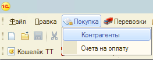
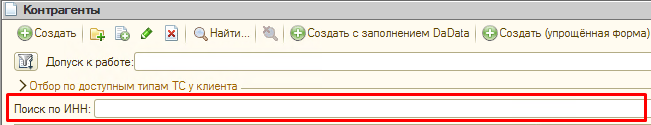
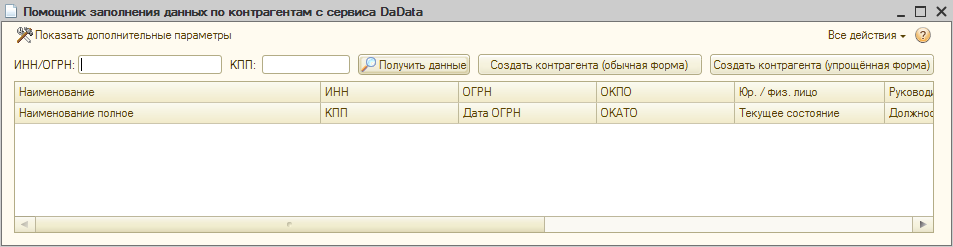
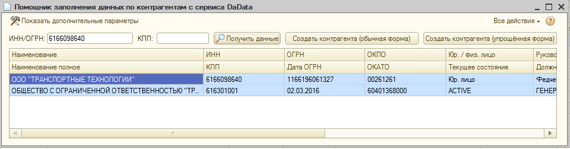
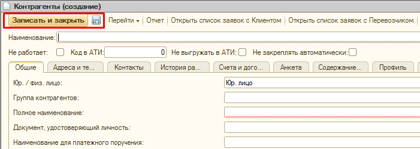

Алгоритм действий: Ниже описан пошаговый процесс заведения нового
контрагента-перевозчика в
базу.
- Открой 1С и перейди во вкладку «Покупка» ➔ «Контрагенты».

- Проверь наличие КА в действующей базе. Введи его ИНН в строку "Поиск по ИНН" окна
"Контрагенты" и нажми Enter

Внимание: Если КА уже есть в базе — новую карточку НЕ СОЗДАВАЙ! Просто открой её для дальнейшей работы или редактирования. - Если по ИНН никого не нашлось - для создания новой карточки нажми кнопку
«Создать». Откроется окно с пустой карточкой для заполнения.
Другой вариант: Кнопка "Создать с заполнением DaData" позволит провести автозаполнение карточки, взяв информацию из внешних источников. Для этого нужно ввести ИНН или ОГРН организации и нажать "Получить данные"

Выбрать из списка поиска нужную организацию и нажать "Создать контрагента(обычная форма)"
Откроется стандартная форма карточки КА, где некоторые поля уже заполнены. -
В карточке переходите на вкладки из списка ниже, заполняя их.
Выберите вкладку для просмотра правил заполнения: - Заполнив все вкладки, для завершения создания карточки нажми кнопку «Записать и
закрыть» или «Записать» (дискета). После закрытия карточки её
можно будет найти в общем списке по ИНН или названию.

Для работы с контрагентом его нужно проверить в службе безопасности. Как отправить карточку КА на проверку - читайте в соответствующем разделе:
Проверка перевозчика в ОЭБ
Правила, требования и процедура проверки перевозчика в ОЭБ